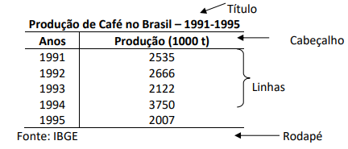
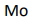

Trabalho de estudante do Instituto Federeal do Rio Grande do Sul

ESTATÍSTICA BÁSICA
1) Conceitos iniciais:
É um conjunto de técnicas e métodos de pesquisa que apresenta processos próprios para coletar, apresentar, analisar e interpretar conjuntos de dados a fim de possibilitar a tomada de decisões.
Divide-se a Estatística em Descritiva e Inferencial, conforme a figura:
Definir alguns conceitos:
- População: Conjuntos de elementos para os quais se deseja investigar uma ou mais características. Pode ser formada por pessoas, domicílios, peças de produção, cobaias, etc.
- Amostra: subconjunto da população
Uma pesquisa que envolve toda a população => Censo ou Recenseamento
Uma pesquisa com parte/subconjunto da população => Pesquisa por Amostragem
2) Tabelas de distribuição de frequências
Um dos objetivos da Estatística é sintetizar os valores que uma ou mais variáveis podem assumir, para que tenhamos uma visão global da variação dessa ou dessas variáveis. E isso ela consegue, inicialmente, apresentando esses valores em tabelas e gráficos, que irão nos fornecer rápidas e seguras informações a respeito das variáveis em estudo.
Composição de uma tabela:

As tabelas podem trazer os dados absolutos (contagem real) e dados relativos (percentuais).
Exemplo 1:
 Em alguns casos, os dados coletados são muito variados e a tabela ficaria com muitas linhas, conforme o exemplo a seguir:
Dessa forma, é interessante reorganizar os dados em classes. Conforme a tabela abaixo
Exemplo 2: Organizar os dados da tabela acima, numa tabela por classes.
Como organizar dessa forma?
1º) Para saber o número mais adequado de classes (linhas), faz-se a raiz quadrada do número
total de objetos pesquisados, no caso os alunos.
Então:
ou seja, √22 ≅ 4,7 ≅ 5 classes/linhas.
2º) Para saber a amplitude de cada classe, dividimos a amplitude total pelo número de classes. Amplitude total é a diferença entre a maior e a menor idade: At = 37 – 18 = 19; Amplitude da classe é a divisão da amplitude total Aclasse = 19 : 5 = 3,8. Podemos arredondar para 4. Depois, estabelece-se cada classe. E por fim, manualmente ou com o auxílio de software, conta-se a frequência dos dados em cada classe.
O símbolo |--- da classe 18|--- 22 significa que o 18 está incluído na contagem e o 22 não está incluído.
Em alguns casos, os dados coletados são muito variados e a tabela ficaria com muitas linhas, conforme o exemplo a seguir:
Dessa forma, é interessante reorganizar os dados em classes. Conforme a tabela abaixo
Exemplo 2: Organizar os dados da tabela acima, numa tabela por classes.
Como organizar dessa forma?
1º) Para saber o número mais adequado de classes (linhas), faz-se a raiz quadrada do número
total de objetos pesquisados, no caso os alunos.
Então:
ou seja, √22 ≅ 4,7 ≅ 5 classes/linhas.
2º) Para saber a amplitude de cada classe, dividimos a amplitude total pelo número de classes. Amplitude total é a diferença entre a maior e a menor idade: At = 37 – 18 = 19; Amplitude da classe é a divisão da amplitude total Aclasse = 19 : 5 = 3,8. Podemos arredondar para 4. Depois, estabelece-se cada classe. E por fim, manualmente ou com o auxílio de software, conta-se a frequência dos dados em cada classe.
O símbolo |--- da classe 18|--- 22 significa que o 18 está incluído na contagem e o 22 não está incluído.
4) Média Aritmética Simples:
A média aritmética simples é o quociente entre a soma de todos os números do conjunto e a quantidade de números que há nesse conjunto.
Exemplo 3: Fiz 5 avaliações valendo 10 pontos cada, conforme está descrito abaixo. A nota final do
componente será a média aritmética simples dessas notas. Qual é essa média?
N1 = 7,5
N2 = 8,2
N3 = 6,0
N4 = 9,8
N5 = 7,9
5) Média Aritmética Ponderada:
Essa média é usada quando há valores que aparecem mais vezes no conjunto dado ou valores que possuem pesos diferentes. Assim, cada valor é multiplicado por seu peso ou frequência, depois são todos somados e, em seguida, divididos pela soma desses pesos ou frequências.
Exemplo 4: No sistema de avaliação do IFRS, adota-se a realização de exames no final do período letivo. A nota final é composta de uma média aritmética ponderada entre a média anual obtida e o exame, da seguinte forma:
Um estudante que ficou com média anual 5,5, fez o exame e tirou 8,7. Ele conseguirá a aprovação, considerando que precisará tirar acima de 5,0 pontos?
5) Mediana:
Notação:
Colocados os dados em ordem crescente, a mediana é o valor que divide a amostra, ou população, em duas partes iguais.
A) Mediana com dados não agrupados:
- Número de termos (n) ímpar => a mediana será o elemento central dos dados em ordem crescente ou decrescente. A posição da mediana é dada por n+1/2.
Exemplo 5:Encontre a mediana da amostra: 5, 13, 10, 2, 18, 15, 6, 16, 9:
Md = 10.
- Número de termos (n) par => usa-se a média aritmética dos dois termos centrais, o termo n/2 e o termo consecutivo, n/2 + 1.
B) Mediana com dados agrupados:
Exemplo 6:
C) Mediana com dados agrupados em classes
É o mesmo procedimento anterior. Quando a classe da mediana for encontrada, basta tomar o valor médio da classe.
6) Moda:
Notação:
Denominamos moda o valor que ocorre com maior frequência em uma série de valores. Desse modo, o salário modal dos empregados de uma indústria é o salário mais comum, ou seja, o salário recebido pelo maior número de empregados.
Utilizamos a moda quando desejamos obter uma medida rápida e aproximada de posição, ou quando a medida de posição deve ser o valor mais típico da distribuição.
Voltar para a Introdução